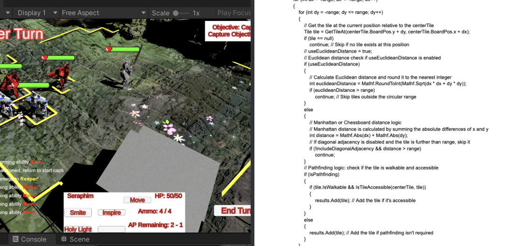
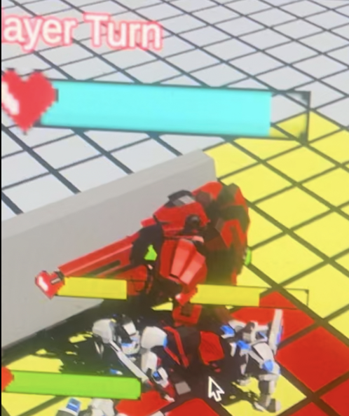
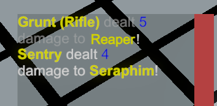
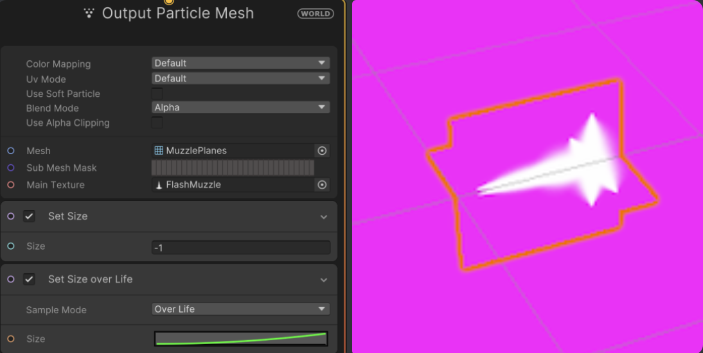

Iron Testament is a turn-based strategy game developed by Rat Economy, a team of 19 USC Games students, and showcased at the USC Games Expo. Players lead a sect of life-worshipping robots against an adversary AI uprising, using positioning and unique abilities to outmaneuver enemies through tactical, turn-based combat.
Gameplay
A* Movement
Movement V2
Conditional A* Movement
Before & After A*
Camera Occlusion Transparency
Euclidean + Manhattan Tile Highlighting

Billboarding UI

Lerped Messages
In-Game Console Log
Rich Text for Color

Photoshop Flash
VFX + Blender

Muzzle Flash In-Game
Active Purifier Sound in Wwise
Layered sound effects designed for gameplay: